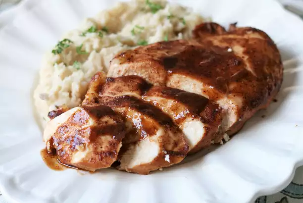

Baked Chicken In a Sweet BBQ Sauce Recipe

Description:
This Baked BBQ Chicken Breast recipe is a fast and easy 30-minute dinner that the whole family will love. The chicken is covered in a sweet and tangy BBQ sauce, then baked until perfectly juicy and caramelized. It’s perfect for busy weeknights and can be made healthy with low-sugar BBQ sauce.
Ingredients
- ½ cup prepared barbecue sauce
- ¼ cup soy sauce
- ¼ cup red wine
- ¼ cup maple syrup
- 1 tablespoon chili powder
- 1 tablespoon dry mustard powder
- 1 tablespoon garlic powder
- 1 teaspoons onion powder
- 1 teaspoons ground cumin
- 4 skinless, boneless chicken breast halves
- 1 tablespoon cornstarch
- 1 cups water
Instructions
- Preheat oven to 400 degrees F (200 degrees C).
- Whisk together the barbecue sauce, soy sauce, red wine, maple syrup, chili powder, dry mustard powder, garlic powder, onion powder, and cumin in a bowl until thoroughly combined.
- Place the chicken breasts into a 9x13-inch baking dish, and pour the sauce over the chicken. Turn the chicken pieces over in the sauce to coat both sides.
- Bake in the preheated oven until the chicken is no longer pink and the juices run clear, about 40 minutes. An instant-read thermometer inserted into the thickest part of a breast should read 160 degrees F (70 degrees C). Remove the chicken from the baking dish, and keep warm.
- Pour the remaining sauce into a saucepan, place over medium heat, and bring to a boil. Whisk the cornstarch and water together in a small bowl until smooth. Whisk the cornstarch mixture into the sauce; reduce heat to a simmer, and allow the sauce to thicken, whisking constantly. Return the chicken to the dish, and pour the thickened sauce over the chicken to serve.
Go Back